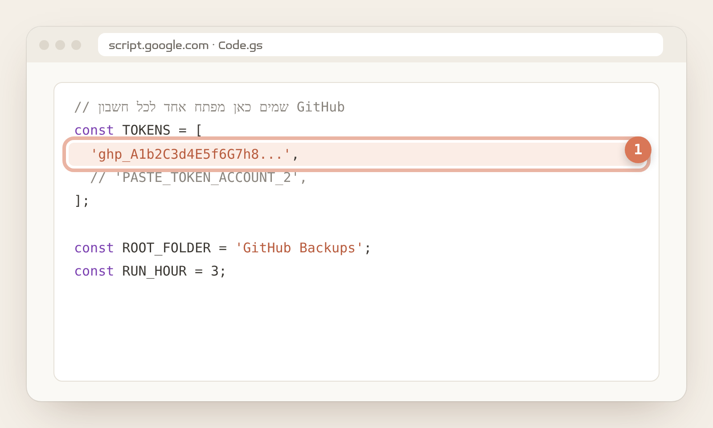

בעמוד הזה
למה צריך גיבוי
GitHub הוא כמו מחסן שבו שמור הקוד של כל האתרים והכלים שבניתם.
אם החשבון ננעל, נמחק או שמשהו נשבר, בלי גיבוי כל העבודה נעלמת.
גיבוי הוא עותק נוסף במקום אחר, כמו מפתח רזרבי לבית שמחכה אצל השכנים.
מה הגיבוי עושה
- 1מה נשמרעותק מלא של כל פרויקט, כקובץ zip (קופסה אחת שכל הקבצים בתוכה)
- 2מתיכל לילה ב-3:00, לבד, גם כשהמחשב כבוי
- 3איפהבתיקייה GitHub Backups בדרייב, עם תיקייה לכל חשבון GitHub
- 4כמה עותקיםתמיד אחד לכל פרויקט: הגרסה הכי עדכנית
- 5פרויקט שלא השתנהלא נוגעים בו, והגיבוי של אתמול נשאר
- 6הגיבוי הקודםעובר לפח של הדרייב ונמחק לגמרי אחרי 30 יום
מה לא נשמר
- 1ההיסטוריהרואים רק את המצב האחרון, לא כל שינוי שנעשה בדרך
- 2ענפים (Branches)גרסאות צדדיות של הפרויקט. נשמרת רק הגרסה הראשית
- 3קבצי סיסמאותהם אף פעם לא נמצאים ב-GitHub, אז שומרים אותם בנפרד
- 4פרויקט ענקפרויקט מעל 50MB לא נשמר
מה צריך
- 1חשבון GitHubאחד או יותר, עם הפרויקטים שלכם
- 2חשבון Googleזה שבדרייב שלו יישמרו הגיבויים
- 310 דקותפעם אחת, וזהו
איך מגדירים, צעד אחרי צעד
- 1
יוצרים מפתח ב-GitHub
המפתח (Token) הוא כמו מפתח לבית שנותנים לשליח: הוא מאפשר לגיבוי להיכנס ולהעתיק את הפרויקטים.
נכנסים ל-github.com/settings/tokens/new, כותבים בשם "גיבוי לדרייב", ובתוקף (Expiration) בוחרים No expiration.
מסמנים V ליד repo, יורדים למטה ולוחצים Generate token.
מעתיקים את המפתח שמופיע (מתחיל ב-
ghp_) ושומרים אותו רגע בצד. הוא מוצג רק פעם אחת.יש לכם כמה חשבונות GitHub? עושים את זה בכל אחד מהם.

- 2
פותחים את Google Apps Script
Apps Script הוא כמו עוזר קטן שגר בתוך חשבון הגוגל שלכם ויודע לעשות פעולות לבד, בשעה קבועה.
נכנסים ל-script.google.com עם אותו חשבון גוגל של הדרייב, ולוחצים "פרויקט חדש" (New project).

- 3
מדביקים את הקוד
מוחקים את כל מה שכתוב בחלון, ומדביקים במקומו את הקוד שבהמשך העמוד (כפתור העתקה).
במקום
PASTE_TOKEN_ACCOUNT_1מדביקים את המפתח, ומשאירים את המירכאות סביבו.יש חשבון נוסף? בשורה שמתחתיה מוחקים את
//בתחילתה, ומדביקים שם את המפתח השני.
- 4
שומרים ומפעילים פעם אחת
לוחצים על סמל השמירה. בתפריט שליד הכפתור "הפעלה" (Run) בוחרים
setup, ולוחצים "הפעלה".גוגל תבקש אישור. לוחצים "בדיקת הרשאות", בוחרים את החשבון, לוחצים "מתקדם" (Advanced), ואז "מעבר אל..." ו"אישור" (Allow).
האזהרה מופיעה כי את הקוד הוספתם אתם ולא גוגל. זה תקין: הוא רץ רק בחשבון שלכם.

- 5
בודקים שזה עובד
פותחים את הדרייב ומחפשים את התיקייה GitHub Backups. בתוכה תיקייה לכל חשבון וקובץ zip לכל פרויקט.
הרבה פרויקטים? הגיבוי הראשון ממשיך לבד ברקע עד שהוא מסתיים.

myFunction במקום setup. ההפעלה "מצליחה", אבל לא קורה כלום.הקוד
// גיבוי יומי של כל הפרויקטים מכל חשבונות ה-GitHub ל-Google Drive.
// שמים כאן מפתח אחד לכל חשבון GitHub (בין המירכאות, מופרדים בפסיק).
const TOKENS = [
'PASTE_TOKEN_ACCOUNT_1',
// 'PASTE_TOKEN_ACCOUNT_2',
];
const ROOT_FOLDER = 'GitHub Backups';
const RUN_HOUR = 3; // שעת הריצה היומית
const MAX_RUN_MS = 4.5 * 60 * 1000;
// להריץ פעם אחת בלבד: יוצר את התזמון היומי ומריץ גיבוי ראשון.
function setup() {
ScriptApp.getProjectTriggers().forEach(t => ScriptApp.deleteTrigger(t));
ScriptApp.newTrigger('backupAll').timeBased().everyDays(1).atHour(RUN_HOUR).create();
backupAll();
}
function backupAll() {
const start = Date.now();
const props = PropertiesService.getScriptProperties();
const root = getFolder_(DriveApp.getRootFolder(), ROOT_FOLDER);
let queue = readQueue_(root);
if (!queue) queue = buildQueue_();
while (queue.length) {
if (Date.now() - start > MAX_RUN_MS) {
writeQueue_(root, queue);
ScriptApp.newTrigger('continueBackup').timeBased().after(60 * 1000).create();
return;
}
const item = queue.shift();
try {
backupRepo_(root, item, props);
} catch (e) {
console.log('נכשל: ' + item.name + ' — ' + e);
}
}
writeQueue_(root, null);
props.setProperty('lastRun', new Date().toISOString());
}
function continueBackup() {
ScriptApp.getProjectTriggers()
.filter(t => t.getHandlerFunction() === 'continueBackup')
.forEach(t => ScriptApp.deleteTrigger(t));
backupAll();
}
function buildQueue_() {
const queue = [];
TOKENS.forEach((token, t) => {
if (!token || token.indexOf('PASTE_') === 0) return;
let page = 1;
while (true) {
const res = gh_(token, 'https://api.github.com/user/repos?affiliation=owner&per_page=100&page=' + page);
if (res.getResponseCode() !== 200) {
console.log('נכשל: מפתח מספר ' + (t + 1) + ' — ' + res.getContentText());
break;
}
const repos = JSON.parse(res.getContentText());
repos.forEach(r => queue.push({ t: t, name: r.full_name, pushed: r.pushed_at }));
if (repos.length < 100) break;
page++;
}
});
return queue;
}
function backupRepo_(root, item, props) {
const key = 'p:' + item.name;
const [owner, repo] = item.name.split('/');
const folder = getFolder_(root, owner);
const fileName = repo + '.zip';
const exists = folder.getFilesByName(fileName).hasNext();
if (exists && props.getProperty(key) === item.pushed) return; // לא השתנה מאז הגיבוי הקודם
const res = gh_(TOKENS[item.t], 'https://api.github.com/repos/' + item.name + '/zipball');
if (res.getResponseCode() !== 200) {
console.log('דילוג: ' + item.name + ' (' + res.getResponseCode() + ')');
return;
}
const blob = res.getBlob().setName(fileName);
const old = folder.getFilesByName(fileName);
while (old.hasNext()) old.next().setTrashed(true);
folder.createFile(blob);
props.setProperty(key, item.pushed);
}
function gh_(token, url) {
return UrlFetchApp.fetch(url, {
headers: { Authorization: 'Bearer ' + token, Accept: 'application/vnd.github+json' },
muteHttpExceptions: true,
});
}
function getFolder_(parent, name) {
const it = parent.getFoldersByName(name);
return it.hasNext() ? it.next() : parent.createFolder(name);
}
function readQueue_(root) {
const it = root.getFilesByName('_queue.json');
return it.hasNext() ? JSON.parse(it.next().getBlob().getDataAsString()) : null;
}
function writeQueue_(root, queue) {
const it = root.getFilesByName('_queue.json');
while (it.hasNext()) it.next().setTrashed(true);
if (queue) root.createFile('_queue.json', JSON.stringify(queue), 'application/json');
}
איך יודעים שהגיבוי עדכני
בשם התיקייה שבתוך קובץ ה-zip יש קוד קצר, למשל 7499555: זה מספר הגרסה של הפרויקט.
בדף הפרויקט ב-GitHub, ליד המילה commits, מופיע אותו קוד. אם הם זהים, הגיבוי מעודכן.
שמירה על המפתח
- 1לא משתפיםמי שיש לו את המפתח יכול לראות את כל הפרויקטים שלכם
- 2הקוד פרטיהוא נמצא רק בחשבון הגוגל שלכם, ואף אחד אחר לא רואה אותו
- 3המפתח דלף?מוחקים אותו בדף המפתחות ב-GitHub, יוצרים חדש ומחליפים בקוד
שאלות נפוצות
זה עולה כסף?
לא. גם GitHub וגם Apps Script חינמיים לשימוש הזה.
המחשב צריך להיות דלוק?
לא. הגיבוי רץ אצל גוגל, לא אצלכם.
איך משנים את שעת הגיבוי?
בשורה RUN_HOUR משנים את 3 לשעה אחרת, שומרים ומפעילים שוב את setup.
איך עוצרים את הגיבוי?
ב-Apps Script לוחצים על סמל השעון בצד (טריגרים) ומוחקים את מה שמופיע שם.
הוספתי פרויקט חדש ב-GitHub. צריך לעשות משהו?
לא. הוא ייכנס לבד לגיבוי של הלילה.


רוצים לבנות דברים כאלה בעצמכם?
הקורס חינמי ובעברית, ולא צריך לדעת לתכנת.